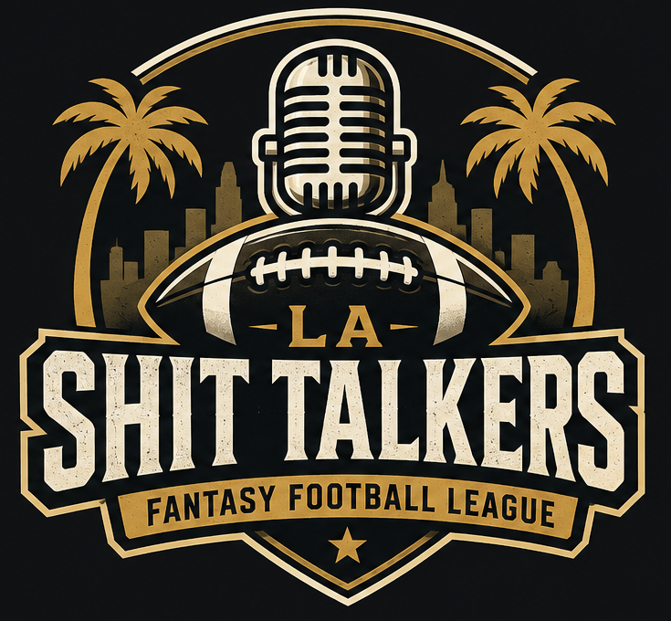
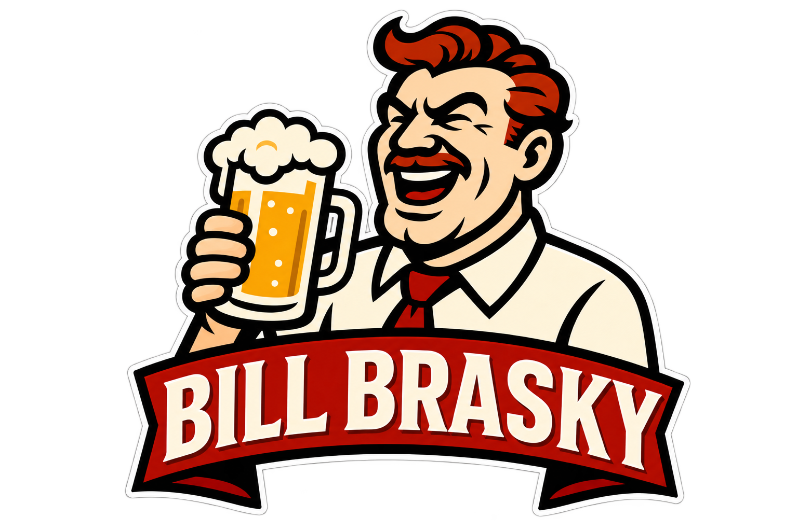

Keeper deadline
Friday, Aug. 21
Submit keepers by 8:00 p.m. PT.
Est. 2020 · Los Angeles
The official home of LA Shit Talkers Fantasy Football. One league, one trophy, and a group chat that never forgets.

Monday at 7:00 p.m. PT
The next chapter
Everything managers need before Week 1. The 2026 keeper, draft-order, draft, and kickoff dates are confirmed.
Keeper deadline
Submit keepers by 8:00 p.m. PT.
Draft-order selection
Determined by the Red Powerball drawn at 7:59 p.m. PT.
Official online draft
The 2026 league draft begins promptly at 7:00 p.m. PT.
Draft Party
Local managers can arrive anytime after 6:00 p.m. PT. Bring your draft device. Those who cannot attend can join via Zoom.
First game
The 2026 fantasy season begins.
Trade deadline
Applies to player trades and future draft-pick trades.
12 teams · One optional keeper per team · Draft-pick trades enabled
2026 Draft Party
The Commish would like to invite local managers to the 2026 Draft Party on Monday, August 31. Arrive anytime after 6:00 p.m. for food, drinks, and some shit talking before the draft. We’ll draft online beginning promptly at 7:00 p.m. PT, so bring your draft device and a swimsuit in case you need to cool off after the pressure of building a championship roster. Those who cannot attend in person can join via Zoom. More details will follow in the league chat.
The law of the land
Based on the 2026 Edition, Version 8, with approved rule amendments incorporated July 28, 2026.
The commissioner administers keeper declarations, confirms eligibility, reviews trades, maintains future draft-pick records, and applies the bylaws consistently. Platform settings and rules not addressed here remain unchanged unless approved by the league.
Financial and payment information is shared privately with league managers. Final placement is based on the fantasy platform after official statistical corrections.
Each manager may keep one eligible player, but is not required to do so. An eligible player may be kept for up to two additional seasons after the original draft or acquisition season. Drafted players must have been selected after Round 1. Keeper history follows the player and is not reset by a trade, drop, or reacquisition.
A player’s first keeper cost matches the prior draft round. If the same player is kept again, the cost moves one round earlier. An originally undrafted free agent or waiver claim begins with a 12th-round keeper cost. Beginning in 2027, qualifying free-agent and waiver-wire players may be kept if acquired by the trade deadline and continuously rostered through season’s end. A manager cannot keep a player if the required pick has already been traded.
Beginning in 2026, managers may include draft picks in trades. A manager may trade a player for one or more picks in the immediately following year’s draft; picks from later years may not be traded. Future-pick trades use the standard league trade deadline and become final once approved by the commissioner.
Keeper declarations are due Friday, August 21, 2026, at 8:00 p.m. PT. Draft-position selection order will be determined by the Red Powerball drawn Monday, August 24, 2026, at 7:59 p.m. PT. The league draft is Monday, August 31, 2026, at 7:00 p.m. PT. The trade deadline is Saturday, November 28, 2026. These dates apply only to the current season.
Protect your guys
Keeper history began in 2025. The repeat cost shows the round each player would cost only if kept again in 2026.
| Team | 2025 keeper | Position | 2025 cost | 2026 repeat cost |
|---|---|---|---|---|
| Bill Brasky | Brock Bowers | TE | Round 10 | Round 9 |
| Banner 18 | James Cook III | RB | Round 4 | Round 3 |
| Bye Week | Chase Brown | RB | Round 9 | Round 8 |
| Ditka in a Box | Lamar Jackson | QB | Round 4 | Round 3 |
| Lattimer | Patrick Mahomes | QB | Round 4 | Round 3 |
| Martin's Team F***ed Ur Mom 69420 | Joe Burrow | QB | Round 7 | Round 6 |
| Mr. Ass | Ladd McConkey | WR | Round 10 | Round 9 |
| Murder City | Saquon Barkley | RB | Round 2 | Round 1 |
| Original champ Simon | Jayden Daniels | QB | Round 6 | Round 5 |
| Shady Hungarians | James Conner | RB | Round 5 | Round 4 |
| The Reacharounds | Alvin Kamara | RB | Round 4 | Round 3 |
| Injury Prone | Malik Nabers | WR | Round 4 | Round 3 |
A player’s first keeper cost matches the prior draft round. If the same player is kept again, the cost moves one round earlier. A projected repeat cost is not a confirmed 2026 selection.
Every pick has a price
Use this ledger as the official snapshot of picks changing hands.
Add each trade with the date, teams, and exact picks or players exchanged.
PLACEHOLDERNames on the trophy
Champions, runners-up, podium finishes, and final standings from the league archive.

Back to back to back champion · 2023, 2024 & 2025
2nd · Mr. Ass · 3rd · Shady Hungarians
2nd · Murder City · 3rd · The Reacharounds
2nd · Martin's Team F***ed Ur Mom 69420 · 3rd · The Reacharounds
Final regular-season table
| Rank | Team | Record | Points for | Points against |
|---|---|---|---|---|
| 1 | Bill Brasky | 10–4–0 | 1,628.88 | 1,412.28 |
| 2 | Mr. Ass | 8–6–0 | 1,548.88 | 1,411.54 |
| 3 | Shady Hungarians | 7–7–0 | 1,425.54 | 1,402.50 |
| 4 | Banner 18 | 10–4–0 | 1,521.20 | 1,314.98 |
| 5 | Ditka in a Box | 9–5–0 | 1,585.88 | 1,433.16 |
| 6 | The Reacharounds | 9–5–0 | 1,554.96 | 1,452.16 |
| 7 | Bye Week | 6–8–0 | 1,460.66 | 1,550.20 |
| 8 | Lattimer | 4–10–0 | 1,479.02 | 1,564.50 |
| 9 | Martin's Team F***ed Ur Mom 69420 | 5–9–0 | 1,394.04 | 1,416.18 |
| 10 | Original champ Simon | 7–7–0 | 1,316.06 | 1,599.52 |
| 11 | Murder City | 4–10–0 | 1,352.12 | 1,555.30 |
| 12 | Injury Prone | 5–9–0 | 1,277.46 | 1,432.38 |
The top three reflect the 2025 playoff finish. The table preserves the final standings and scoring totals shown by the league platform.
Final regular-season table
| Rank | Team | Record | Points for | Points against |
|---|---|---|---|---|
| 1 | Bill Brasky | 9–5–0 | 1,633.54 | 1,452.32 |
| 2 | Murder City | 8–6–0 | 1,550.86 | 1,466.22 |
| 3 | The Reacharounds | 11–3–0 | 1,664.78 | 1,474.98 |
| 4 | Shady Hungarians | 11–3–0 | 1,559.32 | 1,346.52 |
| 5 | Lattimer | 7–7–0 | 1,498.28 | 1,645.48 |
| 6 | Bearded Clams | 8–6–0 | 1,399.72 | 1,367.44 |
| 7 | Banner 18 | 5–9–0 | 1,546.34 | 1,546.72 |
| 8 | Ditka in a Box | 6–8–0 | 1,543.40 | 1,528.66 |
| 9 | Original champ Simon | 6–8–0 | 1,473.78 | 1,569.52 |
| 10 | Bye Week | 5–9–0 | 1,439.16 | 1,549.72 |
| 11 | Martin's Team F***ed Ur Mom 69420 | 5–9–0 | 1,430.74 | 1,582.68 |
| 12 | Mr. Ass | 3–11–0 | 1,186.28 | 1,395.94 |
The top three reflect the 2024 playoff finish. The table preserves the final standings and scoring totals shown by the league platform.
Final regular-season table
| Rank | Team | Record | Points for | Points against |
|---|---|---|---|---|
| 1 | Bill Brasky | 12–2–0 | 1,581.74 | 1,333.04 |
| 2 | Martin's Team F***ed Ur Mom 69420 | 8–6–0 | 1,520.88 | 1,395.96 |
| 3 | The Reacharounds | 10–4–0 | 1,545.80 | 1,347.36 |
| 4 | Murder City | 7–7–0 | 1,480.62 | 1,508.10 |
| 5 | Original champ Simon | 7–7–0 | 1,582.78 | 1,640.20 |
| 6 | Uncle Baby Billy | 10–4–0 | 1,442.66 | 1,328.12 |
| 7 | Daddy's Disappointments | 6–8–0 | 1,582.86 | 1,643.36 |
| 8 | Bye Week | 5–9–0 | 1,234.68 | 1,449.74 |
| 9 | Bearded Clams | 6–8–0 | 1,451.58 | 1,511.94 |
| 10 | Doc | 7–7–0 | 1,426.24 | 1,406.76 |
| 11 | Massholes | 4–10–0 | 1,506.14 | 1,534.28 |
| 12 | Ditka in a Box | 2–12–0 | 1,280.72 | 1,537.84 |
The top three reflect the 2023 playoff finish. Bill Brasky defeated Martin's Team F***ed Ur Mom 69420 in the championship, 121.58 to 120.10. The Reacharounds defeated Murder City in the third-place game, 90.66 to 83.68.